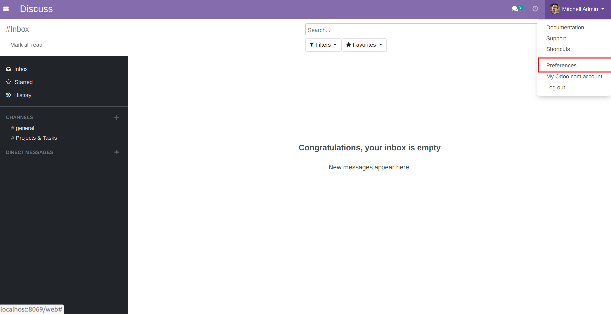
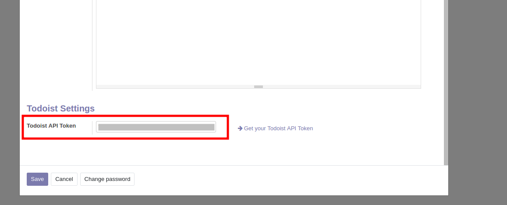
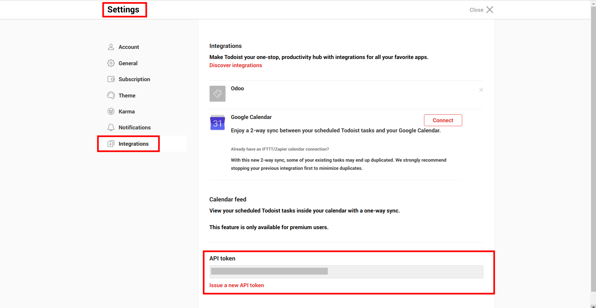
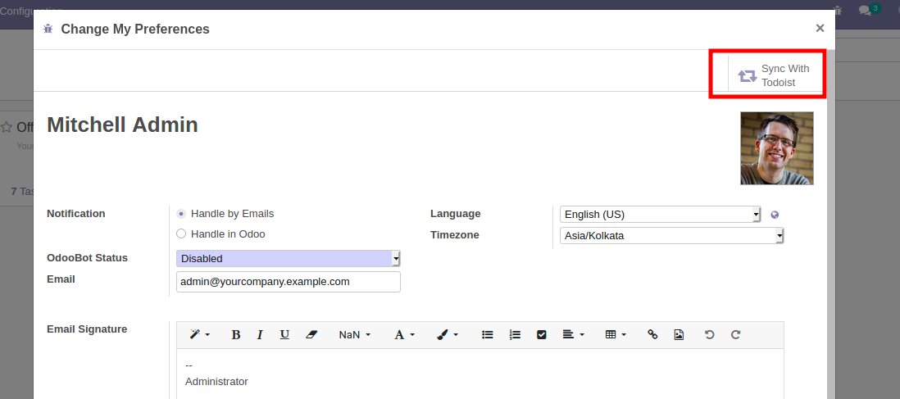
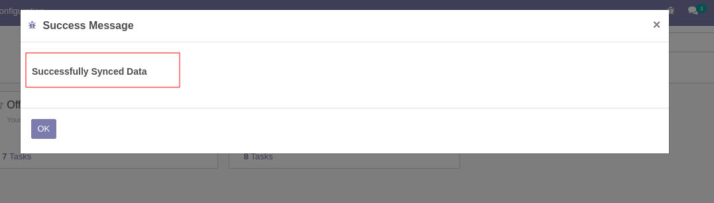
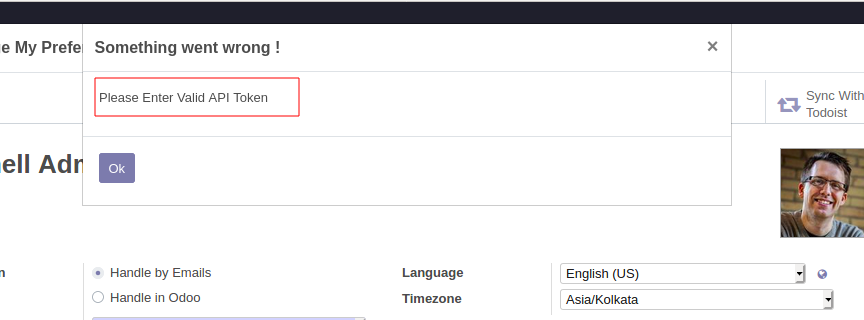
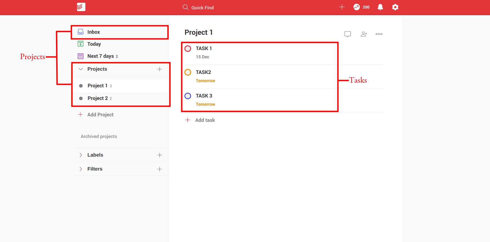
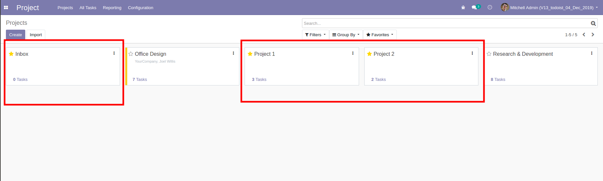
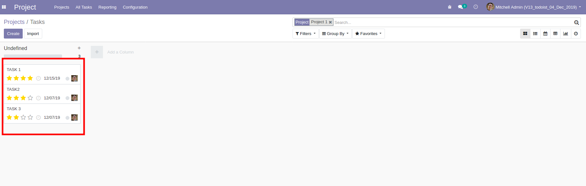
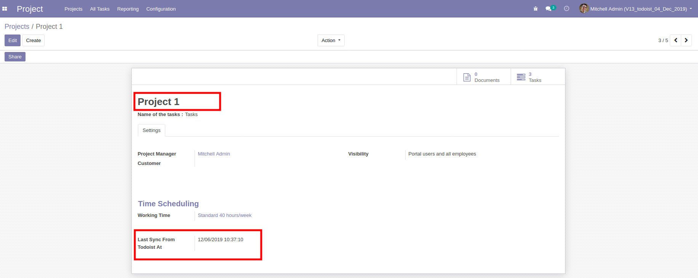

To install this module, you must install todoist python package: "pip3 install todoist-python"
This module allows to integrate Odoo with Todoist. This will manage projects and tasks
from Todoist to Odoo.
Configuration
Go to preferences menu of the user and configure the Todoist API Token.


To get API Token: Login Todoist --> Settings --> Integration.

Click the 'Sync With Todoist' button to sync data from Todoist to Odoo.

If you entered a valid API Token and the syncing is completed, then you can see a success message.Other wise
you can see a warning message to enter the valid API Token.


After syncing you can see the projects and tasks from Todoist in Odoo.
Projects and Tasks in Todoist.

Todoist Projects and Tasks in Odoo.


We can see the last sync time and other data from Todoist projects in Odoo Project View.

We can see the last sync time and other data from Todoist Tasks in Odoo Task View.